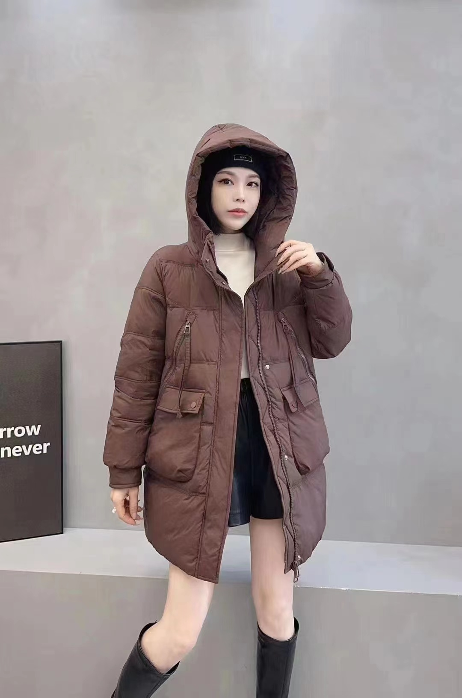
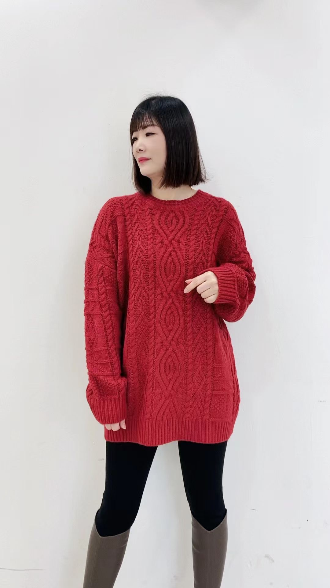
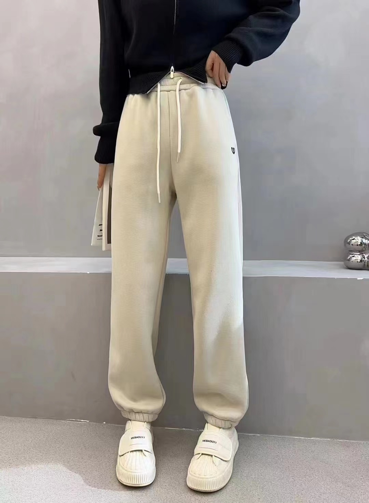
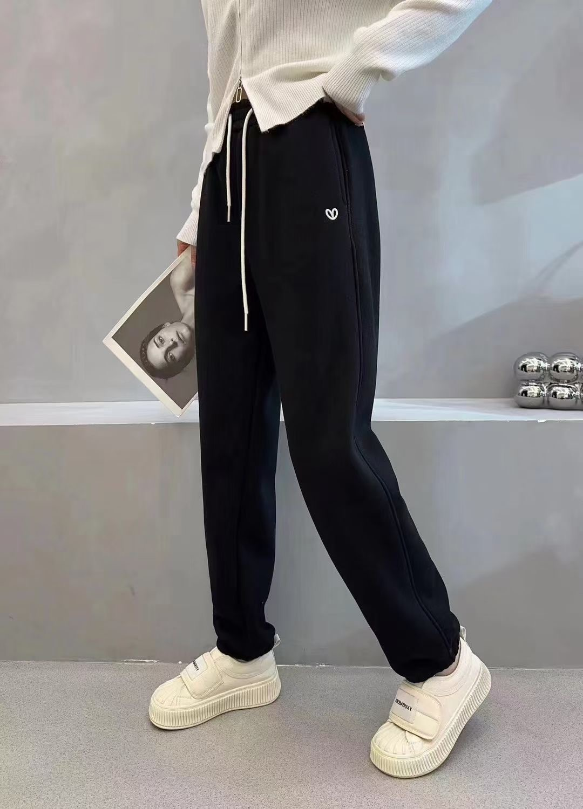
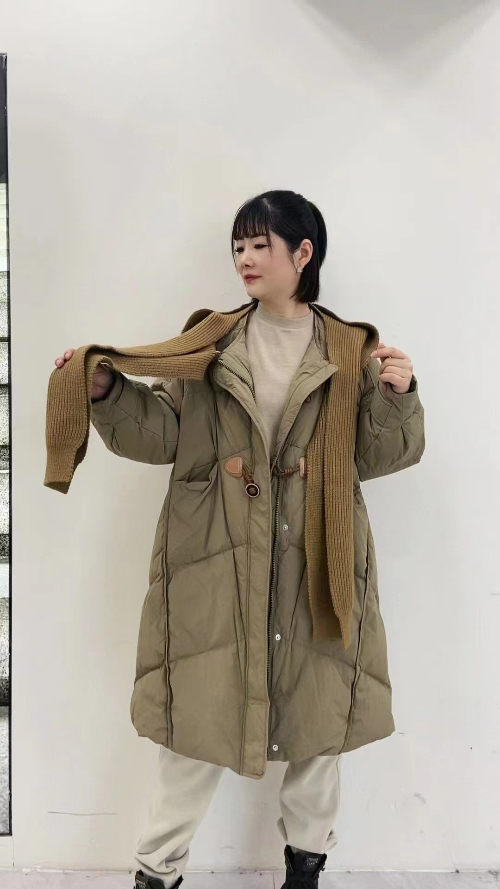
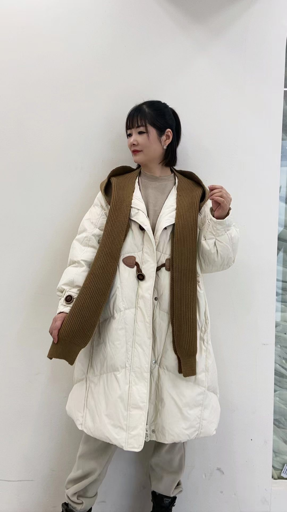

The black cotton-padded coat exudes a sense of timeless elegance, its sleek silhouette enveloping the wearer in warmth and sophistication.
$99

The medium-length brown cotton-padded coat embodies rustic charm and cozy sophistication. Crafted from soft, durable cotton fabric, it exudes a warm and earthy hue reminiscent of rich autumnal tones.
$200
A white striped sweater is a stylish and versatile addition to any wardrobe. With its classic combination of crisp white and contrasting stripes, this sweater effortlessly exudes timeless elegance.
$100

A red cable-knit sweater is a cozy and fashionable choice for cooler weather. The vibrant red color adds a pop of warmth and energy to any outfit, while the cable-knit pattern adds texture and visual interest.
$500
The 2024 new sweater with a "fortune" logo combines fashion with luck perfectly. Made from soft and comfortable wool or wool-blend fabric, this sweater provides warmth and coziness. Its unique feature lies in the eye-catching "fortune" logo, embroidered or printed in gold or other colors symbolizing wealth, positioned on the front or chest of the sweater. This design not only highlights fashion but also conveys a positive attitude and a sense of luck.
$100

The white cashmere pants are a luxurious and versatile wardrobe staple, crafted from the finest cashmere wool to provide unparalleled softness and warmth. With a sleek and sophisticated design, these pants feature a tailored fit that accentuates the silhouette while ensuring comfort and freedom of movement. The pristine white color exudes elegance and sophistication, making these pants suitable for a variety of occasions, from casual outings to formal events.
$90

The black pants with a heart-shaped logo are a charming and stylish addition to any wardrobe. Crafted from high-quality fabric, these pants offer both comfort and sophistication. The sleek black color provides a versatile base for any outfit, while the heart-shaped logo adds a touch of whimsy and personality.
$99
A black fashionable down jacket combines practicality with style, making it a must-have for the colder seasons. Crafted from high-quality materials, this jacket offers both warmth and a sleek aesthetic. The deep black color adds a touch of sophistication, while the design elements elevate it to a fashion statement.
$109

A long brown cashmere coat exudes timeless elegance and luxury, perfect for keeping warm during the colder months while maintaining a sophisticated style. Crafted from premium cashmere wool, this coat offers unparalleled softness and comfort.
$210

A long white cashmere coat exudes timeless elegance and sophistication. Crafted from the finest cashmere wool, this coat offers luxurious softness and warmth. The pristine white color adds a touch of refinement to any outfit, making it a versatile piece for both casual and formal occasions.
$89